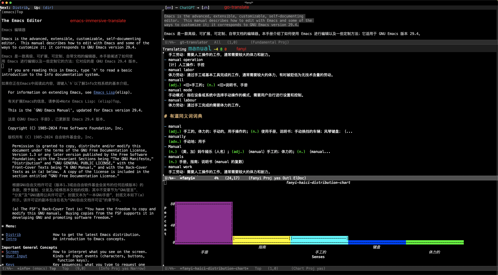

Translation In Emacs
{kind=link}

逛 Emacs China 的时候看到了一些在 Emacs 中翻译的插件1，我也跟着配置了一些。得益于 LLM(Large Language Model)，翻译的质量也好了很多。这篇文章记录一下我都使用了什么插件，怎么配置的以及是如何使用的。
插件使用
插件我主要使用这几个：
- Elilif/emacs-immersive-translate
- Immersive-translate provides bilingual simultaneous display and translation of any text in Emacs.
- lorniu/gt.el
- Translator on Emacs. Supports multiple engines such as Google, Bing, deepL, ChatGPT, StarDict, Youdao and so on.
- condy0919/fanyi.el
- Not only English-Chinese translator for Emacs.
- karthink/gptel
- A simple LLM client for Emacs.
我使用最多的是 emacs-immersive-translate，它的灵感是 Immersive Translate，是我使用频率极高的一个浏览器翻译插件。
emacs-immersive-translate 给我的体验和 Immersive Translate 很接近，我主要是用来查看 Emacs 中的 Info，它还有 immersive-translate-auto-mode ，可以在 buffer 变化的时候自动翻译，很方便。
emacs-immersive-translate 针对 Emacs 中的 Info，elfeed 等做了适配，总体效果看起来是不错的，每次我看 Info 都会用到。
gt.el 的灵活度会更高一些，我主要用来选中文本之后进行翻译。
fanyi 则是当作字典使用，碰到一两个单词不熟悉，就使用 fanyi 进行查询。我很喜欢 fanyi 里面的 海词，它可以生成图表，呈现单词含义的使用频率，让我了解这个单词最常见的含义。
最后，我还会用到 gptel，它实际上不是专门用来翻译的，但是作为 LLM，我可以在任何地方调用它，帮我完成一些翻译任务。
插件配置
你可以在 init-translate.el 中查看翻译的相关配置。
emacs-immersive-translate
你可以在 MELPA 上直接安装 emacs-immersive-translate。
不过我修改了源码，调整了翻译文字颜色，所以我是作为 git submodules 安装的。
然后我配置了使用 OpenRouter 作为翻译服务：
;;; immersive-translate (require 'immersive-translate) (add-hook 'elfeed-show-mode-hook #'immersive-translate-setup) ;; need to api key with user `apikey` in `.authinfo` (setq immersive-translate-backend 'chatgpt immersive-translate-chatgpt-host "openrouter.ai/api" immersive-translate-chatgpt-model "google/gemini-2.5-flash" immersive-translate-pending-message "(≖ᴗ≖๑)" immersive-translate-failed-message "(つд⊂) ")
API Key 在 ~/.authinfo 中配置，由于 emacs-immersive-translate 是查找 user 为 apikey 的配置，因此 user 这里需要设置为 apikey 。
machine openrouter.ai/api login apikey password ********************************
关于 .authinfo 你可以参考：
gt.el
gt.el 也是可以在 MELPA 上直接安装。
我将它配置成使用 OpenRouter 作为翻译服务，翻译显示在一个新的 buffer 中。
;; @see: https://github.com/lorniu/gt.el (maybe-require-package 'gt) (maybe-require-package 'plz) (with-eval-after-load 'init-auth (with-eval-after-load 'gt (setq gt-langs '(en zh) gt-chatgpt-key (spike-leung/get-openrouter-api-key) gt-chatgpt-host "https://openrouter.ai/api" gt-chatgpt-model "google/gemini-2.5-flash" gt-default-translator (gt-translator :taker (gt-taker :pick nil :prompt t) :engines (gt-chatgpt-engine :stream t) :render (gt-buffer-render :name "gt-translator" :window-config '((display-buffer-at-bottom)) :then (lambda (_) (pop-to-buffer "gt-translator")))))))
API Key 也是配置在 ~/.authinfo ，使用 spike-leung/get-openrouter-api-key 这个方法从文件中查找对应的密钥。
spike-leung/get-openrouter-api-key
Source: init-auth.el
;;; init-auth --- config for auth related -*- lexical-binding: t -*- ;;; Commentary: ;;; Code: (setq epa-pinentry-mode 'loopback) ;; input pass in minibuffer ;; (auth-source-pass-enable) ;;; use pass to manage auth-source ;;; function to get api-key from authinfo (defun spike-leung/get-api-key (service &optional host) "Retrieve the API key for SERVICE from authinfo. if HOST exist, retrieve by HOST." (let* ((host (or host (format "api.%s.com" service))) (creds (car (auth-source-search :host host :port 443)))) (if creds (let ((api-key (plist-get creds :secret ))) (if (functionp api-key) (funcall api-key) api-key (error "API key not found for %s" service))) (error "No credentials found for %s" service)))) (defun spike-leung/get-deepseek-api-key () "Retrieve the DeepSeek API key from authinfo." (spike-leung/get-api-key "deepseek")) (defun spike-leung/get-openrouter-api-key () "Retrieve the OpenRouter API key from authinfo." (spike-leung/get-api-key "openrouter" "openrouter.ai")) (provide 'init-auth) ;;; init-auth.el ends here.
fanyi
fanyi 从 MELPA 上直接安装使用即可。
gptel
gptel 也是从 MELPA 上直接安装，然后配置 OpenRouter，具体配置见 init-gptel.el。
gptel 就是当 LLM 用，需要翻译的时候就复制文字和它对话。此外，在日常开发中，gptel 还能用来重构代码，完成一些重复任务，给我一些初始代码逻辑等，也是我用的很频繁的插件。
快捷键
为了方便使用，我将这几个插件绑定到了相同的快捷键入口。
;;; keybindings (defvar spike-leung/my-translate-keymap (make-sparse-keymap) "Keymap for translation commands.") (define-key spike-leung/my-translate-keymap (kbd "i") 'immersive-translate-buffer) (define-key spike-leung/my-translate-keymap (kbd "p") 'immersive-translate-paragraph) (define-key spike-leung/my-translate-keymap (kbd "c") 'immersive-translate-clear) (define-key spike-leung/my-translate-keymap (kbd "f") 'fanyi-dwim2) (define-key spike-leung/my-translate-keymap (kbd "g") 'gt-translate) (with-eval-after-load 'init-my-keybindings (define-key spike-leung/meta-o-keymap (kbd "t") spike-leung/my-translate-keymap))
写在最后
有了翻译插件，在阅读 info 等文档上真的帮助很大，极大地提高阅读效率。集成了 LLM 后，翻译的质量也好了很多。但依赖翻译插件也有个问题，就是原文会看的比较少，不利于增进英语学习。
如果你还有更好的插件，欢迎推荐啦 (ﾉ>ω<)ﾉ